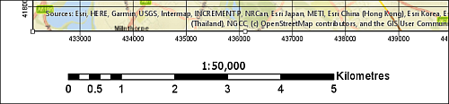

Layout and presentation
The background to laying out and presenting your data and maps will be covered in the lecture segment at the beginning of the class, and the presentation and any other supporting materials will be available in Minerva. The lecture segment should help you to understand why you are doing these exercises. If you still aren’t sure, please ask Clare.
Learning outcomes
When you have completed this section of the workbook you should be able to
- layout a map in such a way that it effectively communicates the content and purpose of your work to a user
- select map elements to include in a layout and set their properties to match the requirements of your map
- print or export your map to show it to it’s best advantage
Introduction
Once you’ve put in all of the hard work to produce a map of your field area or project, it is worth making the extra effort to ensure that you lay it out clearly and print or export it in a professional fashion. Make sure that you allow the time to do this. Care and patience can make the difference between a scruffy, unimpressive map that loses you marks, and a clear, professional map that gives a good first impression.
Warning
Don’t underestimate the time that the final details can take and don’t leave this part of the preparation until the last hour before a deadline!
You won’t need to use all of the elements and features outlined here for every map. Equally this is not an exhaustive list of possible elements. You should already have some idea of what elements are useful, and should be able to make a decision for each case based on your existing knowledge of maps. If you think that you need to add something that is not listed here, e.g. a report based on a table, then use the extra information available in the bibliography, further information and on-line to find out how to add it.
So this chapter isn’t necessarily for working through in order. Make sure that you are aware of the contents and of what Arc is able to do, and then make your own decisions about what you need to include based on the principles that will be covered in class.
Viewing a map layout
In Arc a layout allows you to control the format and scale at which you print your map, and lay out additional elements to complete the final product.
- Open any map that you have created previously in Arc
- Add a layout by going to the
Inserttab of the ribbon and clicking onNew Layout - You’ll be given a choice of paper sizes - for this map select
A4 portrait
A new layout will open as a new tab over the map and will show a blank page. The ribbon will change to give you options relevant to layout.
In this view you will see your map laid out as it will be when it is finally printed or exported. You’ll see the page outlined on screen and, once you have started adding elements, you will see the content on top of it.
Adding a map frame to a blank layout
The first thing you need to do is add your map to the layout. Do this as follows:
- Click on
Map Frameon theInserttab of the ribbon - If you just click on the button you’ll be given a World Map
- If you click on the arrow underneath
Map Frameyou’ll be given some options which include any spatial bookmarks that you have set up1 and the map views in your project.
Click on any of the options to add a map frame to your layout. If you have a map showing the World you can zoom in to the area of your data.
Making use of the contents pane in layout view
As when you’re working on your map, layout view makes use of the Contents pane on the left of the window. The headings will usually be folded, but use the little arrows next to the headings to open them out and see the contents.
The top heading is the layout itself. Within that you’ll find all of the elements on your page. This includes any map frames (there can be more than one), but also scale bars, legends, text etc.
As with the contents pane for a map, elements are drawn in the order that they are listed here. So if you want something to appear above something else, make sure that it is above it in the table of contents.
You can select any element within the contents list and move it on the layout or edit its properties in the pane on the right.
An element can be “locked” in place by clicking on the padlock symbol next to its name.
Size and map scale of layout
Page size and map scale
Warning
Changing the size of the page can sometimes change the scale, so each time you alter the page size check the scale of your map again!
You may need to change the page size as you add more elements to your layout.
Setting the size and scale of a map layout
This video clip can be found in the module area of Minerva or in the full list of video clips.
- Click on the
Layouttab of the ribbon - the
Orientationbutton allows you to change between portrait and landscape orientation - the small button to the right of that one is for
Size- hover over it to see the tool tip. This allows you to choose from a wide range of standard sizes, or useCustom page size...if you need something different.
Change page size and orientation
Change your page orientation and size to A3 landscape. This will give you more space to experiment with adding other elements to your page.
Resizing the map frame in a layout
When you first set up a layout, the size of the map frame that you see will not necessarily be the size that you want. Changing the size of the map frame is easy, but can take a little experimentation. You will also need to look at this in conjunction with the instructions on changing paper size in the previous section.
This video clip can be found in the module area of Minerva or in the full list of video clips.
- Make sure that the map frame that you want to resize is selected in the layout by clicking on it
- When the map frame is selected you should be able to see that it has small boxes at the corner and on each side.
- Use the boxes as “handles” to resize the map frame by clicking on them and dragging
- Keep an eye on the scale dropdown! You may need to put this back to your required scale and then resize the map frame again
- If you need to move the area of the map itself you need to Activate the map by right-clicking on it and selecting
Activate- Move the map as appropriate
- then go to the top of the layout window, where there is an arrow pointing to the right, and click on
Layoutto get back to the previous view.
- Keep repeating the above actions until the size/extent and scale of your map are correct.
Warning
This process can take patience to get the map frame the correct size for the scale and area. There don’t appear to be any short cuts so just stick with it and keep repeating the process!
Setting a fixed extent
It is possible to set the view to show a particular extent, but be warned that if you do this it then becomes impossible to change the scale of your map in either map or layout view, and you won’t be able to resize the map frame in a layout or pan your map in map view. If you’ve been asked to produce a map at a particular scale this won’t be a good idea! If you’ve been asked to produce a map of a particular area this probably isn’t so bad.
- In a layout click on the
Map Framein the Contents - In the
Format Map Framepanel on the right of the window go to the second button across - if you hover over it, it will sayDisplay options - Use the dropdown box under
Constraintto select your choice, e.g.Fixed Extentand set theLocation Settings as appropriate - To get back to the default of being able to pan etc., just set the
Constraintback toNone
It is also possible to set the dropdown to Fixed Scale, which can be useful, but does mean that if you are still working on your map it isn’t possible to zoom in and work on details.
Adding elements to a layout
The information below includes details on adding many different elements to a layout. Not all of these will be appropriate to every layout, but it is up to you to decide which elements to use depending on the purpose and audience of your map and any guidelines specified for assessments or reports. Some of the references in the cartography section of the reading list should help you with this.
Remember that Arc Help2 will provide you with plenty of extra information on how to add map elements to a layout.
Most elements are added to a layout in a similar way to each other using the Insert tab of the ribbon. In most cases you’ll then be presented with a properties dialogue which allows you to make changes to the element.
Once they have been added to the page you can move the elements around. If you need to change properties then click on an element in the contents pane on the left.
This video clip can be found in the module area of Minerva or in the full list of video clips.
Scale bar and scale text
Some indication of scale should always be added to both printed and screen maps. A scale bar is a useful convention for both. Scale text (e.g. 1:50 000 or 1 cm = 1 km) is only relevant for printed maps, not for maps on screen where someone can zoom to any scale. If you add scale text you must also ensure that you print the map at the correct scale.
To add a scale bar
- Click on
Scale baron theInserttab of the ribbon - Select an appropriate scale bar from the list - if you are working in a projected coordinate system such as British National Grid and the map units are metres, then use a metric scale bar
- You can make changes to the format of the scalebar in the properties pane on the right
- To change things such as the number of divisions and the units make sure that the scale bar is selected, then go to the
Designtab on the ribbon
To add scale text
- Click the little arrow next to
Dynamic Texton theInserttab of the ribbon - Select
Scalefrom the choices provided
Arc will add text to your map which will automatically update if you change the scale of your map.

It’s worth having a look at what other text elements can be added via Dynamic Text too, e.g. information about the spatial reference.
Title and text
Maps almost always need an informative title so that people know what they are supposed to show. You should use the insert text command to add a title, or further text, such as your name (or for an assessment your student ID) as creator of the map, a copyright statement, acknowledgements, and further explanation.
To add text:
- From the
Inserttab of the ribbon click on the little arrow next to theTextbutton and select a form of text.Rectangleworks best, particularly if you’re likely to want to add a background, but feel free to try out the other options. - Click on the layout, or click and drag for a rectangle, and type your text
- You can use the
Format textpane on the right to change the text TheText symboldialog will allow you to change the font, and font size
Once you’ve added some text to your layout explore the options in the
Format textpane and theText symboldialog. Try changing your font, your font style and the size of the text. Also have a look at what some of the other options will do.
Copyright acknowledgements
Copyright is important. Remember that most data providers ask you to sign up to conditions that include an obligation to add a copyright to your map. Check what the required copyright statement is and add it.
When you signed up to use the Digimap Collections you agreed to add copyright acknowledgements whenever you created a map with the data. These acknowledgements do change from time to time so it’s worth knowing how to check the requirement for yourself:
- To find these copyright acknowledgements go to the
Digimap Resource Centre(Resourcesat the top of the main Digimap page) - Look for a link to
Digimap Licence Agreementsand click on it - Click on the End User or Sub-licence agreement for the data that you’ve used
- then look for the information under
In return, you must:- that gives you the acknowledgement text
For example, as of April 2019, when you use Ordnance Survey data obtained from Digimap you are expected to add the following text to your map3:
© Crown copyright and database rights year. Ordnance Survey (100025252).
Where year is replaced by the current year.
Remember that you do have to acknowledge each different dataset that you use and will have signed up to that when you registered.
Use the instructions above to find the correct copyright acknowledgement for British Geological Survey data downloaded from the Digimap Geology collection. Is it the same as the Ordnance Survey acknowledgement?
If you are not using U.K. Ordnance Survey data this is not the correct copyright acknowledgement to use, for example, if you are using data for Spain or the United States, or indeed any UK data that you haven’t downloaded from Digimap. You’ll need to find the correct copyright acknowledgement for yourself. There is an article on GIS Lounge about How to cite GIS materials which you may find useful. It explains about citing the software as well as the data.
Digimap also provide advice on citing Digimap data, as opposed to the copyright acknowledgement.
Adding a key / legend to your layout
You’ll have added various data to your map, and it is necessary for you to explain to anyone looking at your map what those layers and symbols show. To do this you’ll need a legend or key.
You will usually start by using the default options to create a legend. Once you have the basic legend it is possible to make alterations later.
This video clip can be found in the module area of Minerva or in the full list of video clips.
- Click on
Legendon theInserttab of the ribbon - then click close to where you want the legend to appear on your map (you will be able to move it later)
Arc will automatically add all of your layers to legend, including those you don’t want to include.
- Use the Contents pane to view the layers which are included in your legend by clicking on the arrow next to its heading
- to remove a layer from the legend just untick it in the Contents
It is very likely that you will want to change the legend in some way to make it clearer - leaving the defaults is usually a very bad idea. Do as many of these changes as you can while it is still being generated automatically.
- Make sure that all the symbology is correct in the map contents
- Rename layers in the map contents pane so that they are in plain English (or what ever language you are using), e.g. no underscores, unexplained abbreviations, or other strange characters4.
- For example, in the default legend above the heading
For_Engeither needs to be removed or written in full as something likeType of engineering required
- For example, in the default legend above the heading
- To change the format of an item right-click on it in the Layout contents pane and select
Propertiesthen try changing the options there.
Converting a legend into a graphic
Once you have all the basic information in your legend you can convert it to a graphic and you will have more flexibility to rearrange items. Note that once you have converted a legend to a graphic it will no longer change automatically if you change symbols or layers on your map, you will have to generate a new legend from scratch. So leave this step until you are happy with everything on your map.
- Right-click on the legend and
Convert to Graphics - Right-click on the legend again and
Ungroup. - Repeat the last step again as necessary on each part of the legend so that individual items become selectable.
Now you should be able to select individual parts of your legend and move them around or delete them.
For example,
- if you have lines with symbols that have been added as points, in your legend move the point symbol so that it is positioned on top of the appropriate line then delete any text that was associated with the symbol
- Add any extra text that you want to add by using the
Textbutton on the ribbon, or remove text that you don’t need - The default legend styles in Arc will not necessarily group features in a way that is most helpful for your map. You can add headings yourself using the Text tool and then rearrange the entries under those headings manually
Make sure that your key covers all of the information that you have added to your map, but doesn’t include any symbology that doesn’t appear on your map. Do you want your audience to waste time sitting there wondering where that symbol is on your map?
Adding a measured grid
Measured grids add labelled grid lines to a layout. If you are using Ordnance Survey or other UK data projected in British National Grid then you can easily add National Grid lines and numbers to your map. The O.S. raster tiff files already have grid lines marked, but adding a measured grid allows you to include coordinates around the edge of your map - making it possible to use grid coordinates to locate features on your map with grid references.
This video clip can be found in the module area of Minerva or in the full list of video clips.
To add a measured grid:
- With the map frame selected, from the
Inserttab of the ribbon click onGrid - You should be presented with a selection of choices. For a map in a projected coordinate system such as British National Grid you will want to choose one of the
Measured Grids, and probablyBlack Vertical Label Grid - You can make changes to the grid in the
Format Map Gridpane to the right of the window when the Grid is selected in the Contents pane - check that the intervals are suitable to the scale of map. You don’t want the lines to be too dense, but you want to have enough to make it possible to see measurements between them. To change the intervals:
- In the
Optionstab untickAutomatically adjustunderInterval - Go to the
Componentstab and change the intervals forLabels,TicksandGridlines
- In the
Numeric grids
Note that the grid Arc adds is fully numeric. You may be more used to seeing grid letters for 100 km grid squares on Ordnance Survey published maps, e.g. our current grid reference is similar to SE 2934 3444, but our current grid coordinates are similar to 42934 43444. It is the latter that will appear on a measured grid generated by Arc. For more information on this and a diagram to help you to change from one to the other see
Adding north arrows
Before adding a north arrow to your layout stop and think about how you need to indicate north on your map. If you look at the technical information on an Ordnance Survey Landranger (1:50 000) map you’ll see a diagram showing Grid north, True north and Magnetic north. The information given there shows how to plot the difference of magnetic north from grid north. Adding this to your own maps can also be useful, particularly if you, or anyone else, are going to be using the map in the field.
If you are taking strike and dip measurements in the field you should have corrected your compass-clino for declination (the horizontal angular difference between true north and magnetic north) anyway. When you plot the measurements on your map it isn’t worth worrying too much about whether you are plotting against grid or true north as the difference on any grid, not just the British National Grid, is unlikely to be that big.
If you add any north arrows to your layout do remember to label them in some way which shows which version of north each one is showing. You still need to add a label if you only add one type of north arrow.
This video clip can be found in the module area of Minerva or in the full list of video clips.
North arrow: Grid north / Map north
If a map is in a projected coordinate system Arc will automatically lay it out aligned with the grid. So for example, any map set to British National Grid will be aligned to grid north.
In this case it isn’t strictly necessary to add a north arrow to show grid north if you also include a measured grid on your map, but it doesn’t hurt.
In layout view:
- From the
Inserttab of the ribbon click on the down arrow under theNorth Arrowbutton - select an arrow style (it’s usually much better not to go for something too fancy!)
- Double-click on the arrow to open the
Format North Arrowpane that opens to the right and check thatTypeis set toMap North
If you check this against your measured grid lines you should find that it matches exactly.
North arrow: True north
True north is the direction from the area of your map to the North Pole. In the east/west centre of a grid, such as that set for the British National Grid, it may well be the same as grid north, e.g. in Leeds the difference is extremely slight. As you go further east or west towards the edges of the area covered by a grid the difference becomes more noticeable, e.g. at Lands End in Cornwall, or in Norfolk.
The ArcGIS Pro Help describes True north as “The north arrow angle points to geodetic north (to the north pole) as calculated by the coordinate system of the associated map frame, at the center of the map.”
To add an arrow showing true north to your map, in layout view:
- From the
Inserttab of the ribbon click on the down arrow under theNorth Arrowbutton - Select an arrow style (it’s usually much better not to go for something too fancy!)
- Double-click on the arrow to open the
Format North Arrowpane to the right and check thatTypeis set toTrue North
If you check this north arrow against your measured grid lines you may well find that the north arrow is slightly tilted.
North arrow: Magnetic north calculated by grid magnetic angle
Magnetic north is the direction from the area of your map to the magnetic North Pole. This is the number that is given on the corner of Ordnance Survey maps and the one geologists need for setting their compass-clinos in the field, so it is worth making a note of this on your map too.
To set magnetic north automatically - in layout view:
- From the
Inserttab of the ribbon click on the down arrow under theNorth Arrowbutton - select an arrow style (it’s usually much better not to go for something too fancy!)
- Double-click on the arrow to open the
Format North Arrowpane to the right and check thatTypeis set toMagnetic North - The properties will give the
Calculated Angle. It’s a good idea to add this and the current date to your magnetic north arrow as magnetic north changes with time.
If you check this north arrow against your measured grid lines you will probably find that the north arrow is slightly tilted. Note that as of July 2020 the line where magnetic north and grid north are the same is passing across the UK so you may find that there is no, or very little difference5.
Setting magnetic north manually
Since version 2.4 of ArcGIS Pro setting a north arrow to magnetic north has become simple, but if you do need to work out the declination for yourself the BGS Geomagnetism Group web page will give you the calibration angle for anywhere in the world. Use the map to select your area and click to retrieve the data. Make a note of the figure shown as degrees east and round it to the nearest two decimal places. The key to the table you are given is underneath the map.
If you need to set the angle manually with the declination from the site above, enter the value into the Calibration Angle box. Note that due to the way Arc calibrates the angle, if your figure is negative you need to add it as positive, if positive, put a minus sign in front of it! The arrow on the preview should change to reflect the magnetic angle.
Adding extra map frames
It can be very useful to be able to place more than one map or map view on a single layout, either so that you can show a different area, or a different zoom level for the same area. You can also use this to set up an automatic extent indicator which marks your study area on a larger map. To do all of this you need to add extra map frames.
This video clip can be found in the module area of Minerva or in the full list of video clips.
Showing a different area of the same map
If you just want to add another frame showing a different area of the same map and using the same data layers, then the process is simple and is basically repeating what you did to add the first map frame.
- Click on
Map Frameon theInserttab of the ribbon - If you just click on the button you’ll be given a World map
- If you click on the arrow underneath
Map Frameyou’ll be given some options which include any spatial bookmarks that you have set up and the map views in your project
Click on any of the options to add a new map frame to your layout. If you have a map showing the world you can zoom in to the area of your data
You can move each map frame separately, but if you turn data layers on or off on one of them, they will be turned on or off on both.
Create a new map frame using different data
Adding another map frame which uses different data layers is a bit more involved but does open up many more possibilities.
- Start by setting up another map - from the
Inserttab of the ribbon click onNew Map - It’s a good idea to rename the maps so that you can remember what each one shows. Do this by bringing up the
Map Propertiesand changing theNamefield - Set this map up with the data you need6 and symbolise as required then return to your layout
- Click on
Map Frameon theInserttab of the ribbon - If you just click on the button you’ll be given a World map
- If you click on the arrow underneath
Map Frameyou’ll be given some options which include any spatial bookmarks that you have set up and the map views in your project
Click on any of the options to add a map frame to your layout. If you have a map showing the World you can zoom in to the area of your data.
Adding an extent indicator
For some maps, particularly large scale (detailed) maps of very small areas, it is useful to show a small scale map of the general area with the area of the main map marked. To do this you need to obtain small scale data and then add it to a second map frame in Arc. You really only need a general map, even just an outline of a whole country, so it can be best to use data from Natural Earth7.
Note that using a screenshot from Google Maps or Google Earth (or similar) with a marker on it doesn’t look good and should be avoided. Not least it is surprisingly easy to end up with the marker in the wrong place.
The example in the picture below shows an extent indicator on a layout which uses a smaller map to show the general area of the main map. In this example the main map has been duplicated and shrunk down, but set to cover the same extent as the main map. The extent is then shown on an outline map of the UK. You can also make the extent straight from the larger map. Note that the indicator does not need to be large, but should be a small map which doesn’t take up too much space on the layout.
Start by adding a new map frame to your map and add your choice of map layers, e.g. the Natural Earth Data countries, to the new map and symbolise appropriately.
Set up the extent indicator
To set up the extent function:
- Resize and relocate the new map frame and set it to an appropriate scale (e.g. start with 1:1 000 000) or the area of the country of your main map.
- Select the outline map (the one that is going to be the extent indicator)
- Click on
Extent Indicatoron theInserttab of the ribbon - From the dropdown select the map frame of the more detailed map that you want the extent indicator to show the area for
- Arc should add a dot to the map at the correct location. You can now use the
Format Extent Indicatorpane on the right to set the properties, e.g. try changing the symbol, or use the dropdown underLeaderand try out the options there
You should now have a map with a marker showing the area covered by your main map and with a line or lines leading to it as in the image above.
If you use a smaller map, as in the example, select that map, and in the Format Map Frame pane choose Linked map frame extent under Constraint so that it continues to show the same area as the main map.
Try moving and rescaling both maps (remember that you have to
Activatethe frame you want to pan and zoom in) - the marker on the extent indicator should resize and relocate to reflect your changes.
You can change the style of the box and the leader line by selecting the correct extent indicator under Extent Indicators in the contents page, then editing the properties in the Format Extent Indicator pane on the right.
Inserting photographs and images
To insert photographs or images, such as a digitised cross-section, into your map layout:
- In a layout select
Picturefrom the graphics group of theInserttab on the ribbon - Click on your layout and then browse for the image you want in the dialog that opens
- Move the image on the page as required. Try not to resize it unless you absolutely have to.
- You’ll get much better quality if you resize vector images in Inkscape / CorelDraw / Adobe Illustrator before you export them, rather than resizing them in Arc once they’ve been saved as rasters
- For photographs try to resize using a photo editing program such as The Gimp, Photoshop or Paintshop Pro
Following some experimentation I would recommend that if you are including diagrams produced either in CorelDraw or Inkscape you
Export/save as...your diagram as png format and then insert the resulting file into Arc. It may not look quite right on screen (gradients can be a bit odd and the image can look very pixelated/blurry) but looks fine when actually printed.Jpg files tended to have problems with colours changing, particularly when exported from CorelDraw.
If the image doesn’t look quite right, try exporting to pdf or printing a copy of your layout before you worry about it (). What you see on screen isn’t always how the final result will look.
Checking your map
A very important stage, but one that can easily be forgotten if you are in a hurry!
In addition to the points below have a look at Darkes (2017)8 which gives a lot of quick tips on map layout and presentation. On pages 92 and 93 Darkes includes a section with quick wins for improving your map before publication if you have 5, 15 or 50 minutes. In addition check the reading list for other references - there is plenty of information available to help you to present better maps.
- Check spelling. Even better - get a helpful (and reliable!) friend to proof-read your text for spelling mistakes. It can be very easy to miss something obvious in your own work. In particular check geological and geographical names and any technical terms.
- Check that you have included everything that you need to include. If this is an assignment reread the instructions and check that you haven’t forgotten to do anything.
- Check that your map doesn’t include anything that you don’t want to include! Did you add some experimental polygons when you were editing, then forget to delete them? Have you clicked on the Add text button too many times, but then not removed the resulting text?
- Look at the article on Using a mapmaking checklist for map design. Read about what makes a map great, then click on the link to the checklist and use the questions there to evaluate your own map.
Printing a copy to pdf to check
Inevitably you’ll notice something not quite right with your map after you have printed it. To minimize the chances of this happening when the (expensive) full-sized colour version is printed it is a good idea to print your map at A3 and have a close look at it first! (This isn’t such an issue if your map is only A3 or A4 when full size.)
- Export your map as a pdf file following the instructions in the section on Printing and exporting maps from Arc.
- Open your pdf map file in Arcrobat reader, or your usual pdf program (instructions below are for Acrobat)
File > Print- Choose your printer and use the printer properties to set the paper size to A3 then choose to print in colour
- In the
Page Handlingsection setPage ScalingtoFit to Printable Area. In Acrobat this should show you a small preview of how your file will print - When you are happy with the settings -
OK
Once you have collected the printed copy have a good look at it to check that everything looks as you expect it to.
Printing and exporting maps from Arc
When you have finished creating your map in ArcGIS you will usually need to export it to pdf for printing. The following instructions should help to ensure that your map is the correct size and scale.
Printing a map from Arc
The best quality is usually obtained by printing directly from Arc, though this isn’t always possible. If it is, print as follows:
- Start by checking that the page size and scale are correct
- Whilst in a layout go to the
Sharetab of the ribbon and click on thePrinticon - Set up the printer as you usually would (this is system specific so I can’t include exact instructions here)
- then click to print
Exporting a map for printing
These instructions show you how to export the map to pdf - the format that is usually required by print shops etc. There are other options, such as png, in the dropdown list if you need to export an image, maybe to include in a Word document, and the instructions are very similar.
- Whilst in a layout go to the
Sharetab of the ribbon and click on theExporticon - Select
PDF(*.pdf)in theSave astype. Do not select theProduction PDFoption, if you have it - it causes all sorts of problems. - Set the resolution - minimum 300dpi for printing. Higher is better, but too high and it will be impossible to export the file, particularly if it is a large map.
- Set
Image QualitytoBest - Give you file a name and choose where to save it (checking first that you have enough disk space - some exported maps can be very large!9)
Export- be patient! For a large map this can take a long time.
Printing your final copy
If you are printing a map that has to be at a particular scale, e.g. for a 1:10 000 field slip or top copy map, when you print your map from pdf double-check in the pdf reader you use that the
Page scalingorZoomis set toActual Size...orNone(the actual terminology depends on which pdf application you are printing from). This is important to ensure that your map is printed at the scale at which you intend it to be printed. Major problems can be caused by the tiny amount that your map will be reduced by otherwise.
Exporting a map to import to other programs
You can also export the Arc layout to include in programs such as Inkscape, CorelDraw, Word or Powerpoint. The instructions here show how to export for Word or Powerpoint.
- To start with set up your Arc layout as required
- Check that the page size, and the scale/size of the map frame are correct - you’ll lose quality if you resize them outside of Arc
- If you want to include a legend in the final layout it is a good idea to create it in Arc and export it with the map as then the colours and sizes of the symbols will match the map
- Export the map using the instructions on Exporting a map for printing, but this time choose the appropriate output format (see below) and set the resolution - to
600dpiif you have the disk space - Choose a location then
Export
If you basically want a good quality image to import into Word, Powerpoint, CorelDraw, Inkscape etc, then
pngorjpgare both fine. Be aware that if you import png or jpg and then resize them you are likely to end up with a blurred final result - double-check before printing.You import
svginto Inkscape and CorelDraw and do some further editing.Whichever format you choose, if your map is going to be part of a bigger presentation where scale is important, such as the Geology final dissertation map, import to either Inkscape or CorelDraw without changing scale/size/proportions (check instructions for these programs) and then double-check the scale of the main map by checking it against the lines of the measured grid. For example, for a map at 1:10 000, a line of 10 cm will be the same length as the space between the 1000 m (1 km) grid lines.
Suggested final map layout
The figure below shows a suggested layout for your final map. Once you have finished working through this chapter you will be able to pick the most appropriate elements to add to your maps. This is the stage where you present your map in the clearest possible way so that your audience can “read” the information that you are trying to give to them.
Try setting your map up on an A3 layout rather than the A4 shown here. It will give you more space to try things out. Remember too, don’t be afraid of white space, so don’t make elements larger just to fill the space available to you.
Your map should not look identical to this as you will have made your own decisions as to what to include and where to put the elements. For example, you could add a small extent indicator to this to show where Ingleton is located within the UK; you could add a north arrow (remember to give the details if you do); you should include your name, or at least Student ID, as the creator of the map.

Recommended reading: layout and presentation
The module reading list10 includes a full section on layout and presentation. In particular have a look at “Designing better maps” by Cynthia Brewer, but for a quick overview look at the article by Fry (2001) or the book by Darkes and Spence (2017). For examples and ideas look at Brewer (2008) and the ESRI Map Book Gallery.
-
See Spatial bookmarks if you need a reminder about how to set them up and use them. ↩
-
To find Arc Help either press
F1from within Arc, or go to the ESRI web pages. ↩ -
To add the copyright symbol - © to your text
- Check that the
number lockis on on the keyboard - hold down the
Altkey - use the number pad to type
0+1+6+9 - release the
Altkey
- Check that the
-
As an aside - the ESRI blog has a short discussion about the use of singular and plural nouns for legend items which you might find informative. ↩
-
See a blog post from the Ordnance Survey about the march of magnetic north for more about this. ↩
-
You can either add completely different data, in a different coordinate system if you wish, or copy and paste layers from your original map frame, and then symbolise and label them differently if necessary. ↩
-
On the Natural Earth Data homepage look for
Downloads > Large Scale Data > Cultural > Download Countries. Don’t forget you’ll need to reference this data. ↩ -
Reference here ↩
-
If you are working on the university network and think that you may be short of disk space you can save the export to the c: drive of the desktop of your computer in the first place, but do make sure that you then move the file to your M: drive or a USB stick. Forget and you’ll lose it. ↩
-
Reading list available from Minerva and from the module catalogue. ↩